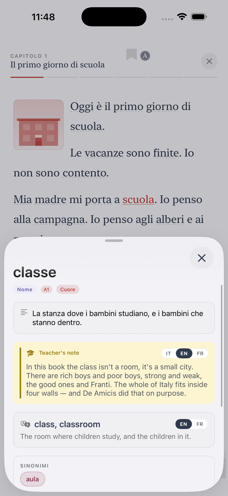

Ti gets you. Ti teaches you.
Learn Italian, from the very first word to Dante.
Ti is the iOS app for foreigners and migrants who want to learn real Italian — the kind you speak at the post office, the café, the citizenship interview. Everything explained in your own language.
Why Ti is different
You've probably tried Duolingo. Maybe Babbel. They're fine — for tourists. Ti is built for the person who actually lives (or plans to live) in Italy.
Built by a real teacher
Ti was designed by Alessio, an Italian teacher with years of classroom experience — not by a game studio.
CEFR from day one
The six levels (A1 → C2) are the same used by universities, employers and the citizenship test.
Your language, first
All explanations available in English, Arabic, Chinese, Bengali, Filipino, Ukrainian and 8 more.
What's inside
CEFR path
Six levels, dozens of stages. Vocabulary, grammar, listening and reading, all tied to a clear map.
Thematic newsstand
Real reading practice: culture, food, cinema, current affairs — always at your level.
Graded classics
Read Pirandello, Calvino, Manzoni in adaptations that grow with you.
Dictionary in 14 languages
Over 3,000 words with translations, examples and native audio.
Games and drills
Crosswords, matching, dictation. The boring parts of study, made playable.
Native audio
Every word and dialogue is recorded so you can hear real Italian pronunciation.
Six levels, one clear path
Wherever you start, you always know what's next.
Survive
Order coffee, introduce yourself, ask basic questions.
Get by
Everyday errands, forms, appointments. Citizenship level.
Manage
Work, school, social situations, in Italian.
Discuss
Debate, explain, understand news and TV.
Nuance
Idioms, register, literature, abstract topics.
Master
Near-native. Dante, contracts, dialects and jokes.
Frequently asked questions
Is Ti free?
You can start free. Advanced levels and some features are behind a small paid plan — monthly, yearly or lifetime.
Is Ti good for the Italian citizenship test?
Yes. The A2 CILS level covers the vocabulary and grammar you need for the citizenship exam.
Do I need any Italian to start?
No. Start at A1. Everything is explained in your native language, then in Italian.
Which languages does Ti support?
Fourteen: English, Spanish, French, German, Portuguese, Dutch, Romanian, Albanian, Ukrainian, Chinese, Arabic, Filipino, Bengali, Tigrinya.
Is Ti only for people in Italy?
No — it works anywhere. But the content is tuned to real life in Italy, which helps if you live here.
See Ti in action
The CEFR path, exercises, edicola and graded Italian classics — from A1 to C2, in 14 languages.


